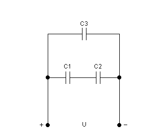
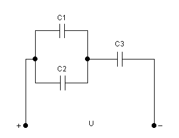

Dovede li se na kondenzator kapaciteta C izmjenični napon,
zbog stalne promjene polariteta napona, kondenzator se naizmjenično nabija i izbija.
Kako naboji pritom struje naizmjenično na ploče kondenzatora i s njih,
kroz kapacitet kao da teče izmjenična struja.
Uz sinusoidni napon, u krugu s kapacitetom C i struja je sinusoidnog
oblika i jednake frekvencije.
Amplituda (vršna vrijednost) struje Im pritom je
razmjerna amplitudi napona Um, kružnoj frekvenciji ω
i kapacitetu kondenzatora C, tako da je
\[I_m = ω \times C \times U\]
Omjer amplituda napona i struje ovdje određuje otpor koji kapacitet
predstavlja izmjeničnoj struji. Taj se otpor naziva kapacitivni otpor
i označava s XC.
\[{U_m \over I_m} = {U \over I} = {1 \over ω \times C} = X_C\]
Spoj dvaju kondenzatora u kojem naboj iz izvora može doći samo na vanjske ploče spoja, dok su unutarnje ploče od izvora odvojene izolatorom.
Kako se međutim unutarnje ploče nalaze u polju nabijenih vanjskih ploča, na njima se influencijom razdvaja naboj i to upravo tolikog iznosa koliki je naboj vanjskih ploča.
Rezultat toga je da su oba kondenzatora nabijena i to jednakim količinama naboja.
Međusobno jednaki naboji Q1 i Q2 ovako spojenih kondenzatora jednaki su ujedno i ukupnom naboju Q koji je izvor razdvojio na cijelom spoju, tj.
\[{Q_1}={Q_2}={Q}\]
Ovakav spoj gdje je ukupni naboj spoja jednak naboju svakog pojedinog kondenzatora naziva se serijski spoj kondenzatora.
Prema Kirchhoffovom zakonu za napone, u serijskom spoju ukupni napon na spoju Uuk jednak je zbroju napona pojedinih kondenzatora, U1 i U2
\[{U_{uk}}={U_1}+{U_2}\]
Uvrste li se ovi naponi izraženi pomoću naboja i kapaciteta (gdje je Cuk ukupni kapacitet spoja)
\[U_{uk} = {Q \over C_{uk}} \qquad U_1 = {Q \over C_1} \qquad U_2 = {Q \over C_2}\]
dobiva se sljedeća jednadžba
\[{Q \over C_{uk}} = {Q \over C_1} + {Q \over C_2} \]
koja (djeljenjem s Q) daje izraz za ukupni kapacitet Cuk serijskog soja dvaju kondenzatora
\[{1 \over C_{uk}} = {1 \over C_1} + {1 \over C_2} \quad tj. \quad C_{uk} = {{C_1 \times C_2} \over {C_1 + C_2}} \]
Općenito za serijski spoj n kondenzatora vrijedi
\[{1 \over C_{uk}} = {1 \over C_1} + {1 \over C_2} + ... + {1 \over C_n} \]
U serijskom spoju, recipročna vrijednost ukupnog kapaciteta jednaka je zbroju recipročnih vrijednosti pojedinih kapaciteta.
Ukupni kapacitet serijskog spoja je manji od najmanjeg pojedinačnog kapaciteta.
Na serijski spojenim kondenzatorima napon se dijeli obrnuto razmjerno njihovim kapacitetima
$${{U_1 \over U_2} = {C_2 \over C_1}}$$
Za serijski spoj kondenzatora kaže se da je kapacitivno djelilo napona.
Kondenzatori na slici spojeni su tako da imaju isti napon, koji je jednak ukupnom naponu spoja
\[{U_1}={U_2}={U}\]
Spoj gdje su kondenzatori priključeni na isti napon nazivamo paralelni spoj kondenzatora.
Naboj je ovdje razdijeljen na pojedine kondenzatore (pozitivni na gornjim, a negativni na donjim pločama),
tako da je ukupni naboj spoja jednak zbroju naboja pojedinih kondenzatora, tj.
\[Q={Q_1}+{Q_2}\]
Dijeljenjem ove jednadžbe naponom U dobivamo
\[{Q_{uk} \over U}={Q_1 \over U}+{Q_2 \over U}\]
Omjer ukupnog naboja Quk i ukupnog napona U spoja određuje ukupni kapacitet spoja Cuk, pa uz
\[C_{uk} = {Q_{uk} \over U} \qquad C_1 = {C_1 \over U} \qquad C_2 = {C_2 \over U}\]
dobivamo izraz za ukupni kapacitet ovoga spoja
\[{C_{uk}}={C_1}+{C_2}\]
Općenito, za paralelni spoj n kondenzatora vrijedi
\[{C_{uk}}={C_1}+{C_2}+...+C_n\]
Ukupni kapacitet paralelnog spoja kondenzatora jednak je zbroju pojedinačnih kapaciteta.
Na paralelno spojenim kondenzatorima naboj se dijeli razmjerno njihovim kapacitetima
$${{Q_1 \over Q_2} = {C_1 \over C_2}}$$

Dva serijski spojena kondenzatora (C1 i C2),
kojim naboj iz izvora može doći samo na vanjske ploče spoja,
spojeni su zajedno sa kondenzatorom C3 u paralelu.
Slika prikazuje tri kondenzatora u mješovitim spoju (kombinacija serijskog spoja i paralelnog spoja).
Rezultat ovakvog spoja je da su dva kondenzatora (C1 i C2) nabijena jednakim količinama naboja
i zajedno sa kondenzatorom C3 dijele ukupni naboj (Quk).
Da bi izračunali ukupni naboj u strujnom krugu trebamo mješoviti spoj svesti ili na serijski spoj ili na paralelni spoj.
Kod slike pomoću formule za izračunavanje ukupnog naboja u serijskom spoju kondenzatora možemo izračunati naboj Q12 (naboj na kondenzatorima C1 i C2).
Kada izračunamo naboj Q12 dobiti ćemo paralelni spoj dvaju kondenzatora (C12 i C3).
Zatim uz pomoć formule za izračunavanje ukupnog naboja u paralelnom spoju kondenzatora možemo izračunati ukupni naboj u ovom mješovitom spoju kondenzatora.
\[Q_{12}=Q_1=Q_2 \qquad Q_{uk}=Q_{12}+Q_3\]
Za izračun napona na kondenzatorima koristimo isti princip kao i u spoju kondenzatora u seriju ili paralelu.
Napon na kondenzatorima (C1 i C2) izračunati ćemo pomoću formule
$$U_{12} = U_1 + U_2$$
Nakon izračuna napona (U12) na kondenzatorima (C1 i C2) možemo izračunati i napon na kondenzatoru C3.
Za spoj kondenzatora u paralelu vrijedi da je napon na kondenzatorima jednak ukupnom naponu spoja, pa je
$$U= U_{12} = U_3$$
Kod izračuna kapaciteta za mješoviti spoj kondenzatora koristimo se već proučenim znanjem.
Za kapacitet C12 koristimo formulu za kapacitet kod serijskog spoja kondenzatora
$$ C_{12}={{C_1 \times C_2} \over {C_1 + C_2}} $$
Nakon izračuna kapaciteta C12 možemo izračunati ukupni kapacitet strujnog kruga primjenom formule za ukupni kapacitet paralelnog spoja kondenzatora
$$ C_{uk}= C_{12} + C_3 $$

Slika prikazuje još jedan način mješovitog spoja kondenzatora.
Na slici dva paralelno spojena kondenzatora (C1 i C2) spojeni su u seriju sa kondenzatorom C3.
Rezultat ovakvog spoja je da dva kondenzatora (C1 i C2) imaju razdijeljen naboj na pojedine kondenzatore
i zajedno sa kondenzatorom C3 imaju jednaku količinu naboja.
Kod slike pomoću formule za izračunavanje ukupnog naboja u paralelnom spoju kondenzatora možemo izračunati naboj Q12 (naboj na kondenzatorima C1 i C2).
Kada izračunamo naboj Q12 dobiti ćemo serijski spoj dvaju kondenzatora (C12 i C3).
Zatim uz pomoć formule za izračunavanje ukupnog naboja u serijskom spoju kondenzatora možemo izračunati ukupni naboj u ovom mješovitom spoju kondenzatora.
\[Q_{12}=Q_1+Q_2 \qquad Q_{uk}=Q_{12}=Q_3\]
Za izračun napona na kondenzatorima koristimo isti princip kao i u spoju kondenzatora u seriju ili paralelu.
Napon na kondenzatorima (C1 i C2) dobiti ćemo pomoću formule
$$U_{12} = U_1 = U_2$$
Nakon dobivenog napona (U12) na kondenzatorima (C1 i C2) možemo izračunati i napon na kondenzatoru C3.
Za spoj kondenzatora u seriju vrijedi da je napon
$${U= U_{12} + U_3} \qquad U_3 = U - U_{12}$$
Kod izračuna kapaciteta za mješoviti spoj kondenzatora koristimo se već proučenim znanjem.
Za kapacitet C12 koristimo formulu za kapacitet kod paralelnog spoja kondenzatora
$$ C_{12}=C_1 + C_2 $$
Nakon izračuna kapaciteta C12 možemo izračunati ukupni kapacitet strujnog kruga primjenom formule za ukupni kapacitet serijskog spoja kondenzatora
$$ C_{uk}={{C_{12} \times C_3} \over {C_{12} + C_3}} $$
